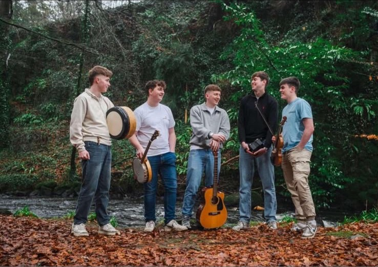

Stream the music
Out now & on the way
Single · Original
Their own original — a song that's become a firm favourite at the live shows. Out now on all platforms.
ListenSingle
Their take on the classic — and a perfect showcase of the Dusty Windowsills sound. Out now.
ListenEP
A brand new EP is on the way, with more music to follow. Follow on socials to be the first to hear it.
Stay tuned
The band
The Dusty Windowsills are one of the most exciting young folk bands around, with a sound built on big choruses, driving rhythms and the kind of energy that turns a gig into a session.
Drawing on everything from classic folk and ballads to modern anthems, they put their own stamp on every tune they play, blending influences old and new into something unmistakably theirs.
They've built a loyal following on the back of their live shows, and they're only picking up pace. Give them a listen, give them a follow, and catch them live.
Don't miss a beat
New music, live dates and behind-the-scenes — it all drops on socials first. Give them a follow.
For bookings at your venue, festival or event, get in touch through any of our socials and we'll get back to you.
Message us on Instagram